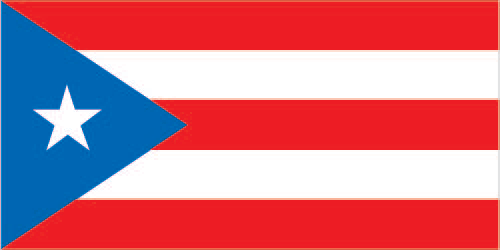

Here are some interesting facts
Ireland is located in the contient of Europe
The official languages are irish and English, but most people do not speak irish
The unsinkable titanic was made in Ireland
Here are some stereotypes about Puerto Rican's
All Hispanics are the same nationality
Puerto Rican's all have curly black hair
Puerto Rican's are "fake" hispanics
Puerto Rican's only eat rice and beans

The Puerto Rico flag is very symbolic to its people, it was first created in 1952. This flag has many meanings so lets get into them first we have the three red lines which represent the blood that makes up the powers of the government Executive, Legislative, and Judicial.Next the white stripes these represent the individual liberty and the rights that balance out the goverment.To add on to this amazing flag the Blue Triangle in the center stands for the "Republican Government". Lastly the White Star is to show the Commonwealth of Puerto Rico.